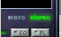
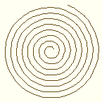
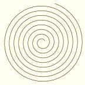
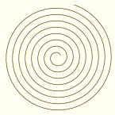

| Home/ |
| Table of Content/ |
|
|
|
|
Introduction |
On the other hand, AGG allows you to replace any part of the library, if, for example, it doesn't fit performance requirements. Or you can add another color space if needed. All of it is possible because of extensive using of C++ template mechanism. |
Most of the graphic libraries have a single class like “Graphics”
in GDI+, that has hundred or even thousands of functions. This object
can exist implicitly, like in OpenGL. Anyway, all commonly used
graphical tool kits, including Java2D, DisplayPDF, SVG, and other very
good ones have this kind of a class explicitly or implicitly.
That's simple and in some cases quite suitable, but always very
restrictive. It works well only in simple cases, at least I haven't
seen a graphical library that would completely fit all my needs.
Moreover, all that kinds of libraries or standards have a
syndrome of giantism. Most of the functionality is never
used, but some simple things are impossible to achieve. Herein, the
graphical engines (or libraries) typically weigh tons of
mega-bytes. If you take the most advanced SVG viewer,
|
The primary goal of |
 Quality of Rendering |
But most of all, your applications become absolutely portable, if your design is smart enough. AGG can be also a tool to combine different outputs in a uniform API. Particularly, you can use AGG to generate raster images on the server side in your Web-Based applications. And it all can be cross-platform! |
Well, it's a word drawn with |

Now look at the same picture that has normal size and within the context. You easily
recognize word “stereo”. However, the pictrures are exactly the same. The first
one is just an enlarged version of the last one. This very property allows us to
reconstruct missing information on the basis of accumulated experience. |
But the point is not only in |
A Bresenham Line Rendered with Subpixel Accuracy |
Consider cases (2) and (3). The thin black lines are what we need to interpolate.
If we use Subpixel Accuracy we will really have two different sets of pixels
displayed, despite of the fact that the begins and ends of both lines fall into
the same pixels. And the lines have really different tangents, which is very important.
If we use a classical Bresenham, without considering the Subpixel Accuracy we will see
result (1) in all cases. That's especially important to approximate curves with short
line segments. But if we use |

|
Here all three spirals are approximated with short straight line segments.
The left one is drawn using regular integer Bresenham, when the coordinates
are rounded off to pixels (you will have a similar result if you use
Winwows GDI MoveTo/LineTo, for example). The one in the middle uses a modified
integer Bresenham with precision of 1/256 of a pixel. And the right one uses
the same 1/256 accuracy, but with |
The Subpixel Accuracy is even more important to control the visual thickness
of the lines. It's possible only if we have good algorithms of
|
Modern displays have resolutions of at most 120 DPI, while Subpixel Accuracy is actual up to 300 DPI. The following picture shows lines with thickness starting from 0.3 pixels and increasing by 0.3 pixel. |
 Lines Rendered with Anti-Aliasing and Subpixel Accuracy |
There are two more examples of rendering with Subpixel Accuracy. |
Circles Rendered with Anti-Aliasing and Subpixel Accuracy |
Cute Lions |
Note that the appearance of the small ones remains consistent despite of lost details. |
Also AGG is designed keeping in mind extensibility and flexibility. Basically I just wanted to create a toolkit that would allow me (and anyone else) to add new fancy algorithms very easily. |
AGG does not dictate you any style of its use, you are free to use any part of it. However, AGG is often associated with a tool for rendering images in memory. That is not quite true, but it can be a good starting point in studying. The tutorials describe the use of AGG starting from the low level functionality that deals with frame buffers and pixels. Then you will gradually understand how to abstract different parts of the library and how to use them separately. Remember, the raster picture is often not the only thing you want to obtain, you will probably want to print your graphics with highest possible quality and in this case you can easily combine the “vectorial” part of the library with some API like Windows GDI, having a common external interface. If that API can render multi-polygons with non-zero and even-odd filling rules it's all you need to incorporate AGG into your application. For example, Windows API PolyPolygon perfectly fits these needs, except certain advanced things like gradient filling, Gouraud shading, image transformations, and so on. Or, as an alternative, you can use all AGG algorithms producing high resolution pixel images and then to send the result to the printer as a pixel map. |
Here:
|
Colors in AGG appear only in renderers, that is, when you actually put some data
to the rendering buffer. In general, there's no general purpose structure or
class like “color”, instead, AGG always operates with concrete color space.
There are plenty of color spaces in the world, like RGB, HSV, CMYK, etc., and
all of them have certain restrictions. For example, the RGB color space is just a
poor subset of colors that a human eye can recognize. If you look at the
full |
CIE Chromaticity Diagram and the RGB Gamut |
In other words there are plenty
of colors in the real world that cannot be reproduced with RGB, CMYK, HSV, etc.
Any color space except the one existing in Nature is restrictive.
Thus, it was decided not to introduce such an object like “color” in order
not to restrict the possibilities in advance. Instead, there are objects that
operate with concrete color spaces. Currently there are agg::rgba and agg::rgba8
that operate with the most popular RGB color space (strictly speaking there's
RGB plus Alpha). The RGB color space is used with different pixel formats, like
|
Basically, AGG operates with coordinates of the output device. On your screen there are pixels. But unlike many other libraries and APIs AGG initially supports Subpixel Accuracy. It means that the coordinates are represented as doubles, where fractional values actually take effect. AGG doesn't have an embedded conversion mechanism from world to screen coordinates in order not to restrict your freedom. It's very important where and when you do that conversion, so, different applications can require different approaches. AGG just provides you a transformer of that kind, namely, that can convert your own view port to the device one. And it's your responsibility to include it into the proper place of the pipeline. You can also write your own very simple class that will allow you to operate with millimeters, inches, or any other physical units. |
Internally, the rasterizers use integer coordinates of the format 24.8 bits, that is, 24 bits for the integer part and 8 bits for the fractional one. In other words, all the internal coordinates are multiplied by 256. If you intend to use AGG in some embedded system that has inefficient floating point processing, you still can use the rasterizers with their integer interfaces. Although, you won't be able to use the floating point coordinate pipelines in this case. |
| NOTE If you want to use AGG in Windows Visual C++ environment, please note that there's no “stdafx.h” file used. It's  Microsoft specific and not
a part of C/C++ standard libraries, but Microsoft just enforces to use it.
To successfully use AGG in Visual C++ projects don't forget to turn off the
“Precompiled Headers” option for all AGG source files. Besides, if you
link AGG with static MFC you will probably have duplicating Microsoft specific and not
a part of C/C++ standard libraries, but Microsoft just enforces to use it.
To successfully use AGG in Visual C++ projects don't forget to turn off the
“Precompiled Headers” option for all AGG source files. Besides, if you
link AGG with static MFC you will probably have duplicating new and delete
operators when linking. It's not because of AGG, it's because of MFC.
You will have the very same problem when you try to use any other C++
code that calls new/delete and doesn't include Microsoft recommendations or just search in Google for “ |
As it was mentioned above, AGG uses C++ template mechanism very actively. However, it uses only well known and proven language constructions. A good compatibility is one of the primary aspirations. C++ gurus can be suprised that AGG doesn't use STL, for example. It's done intentionally, in order not to have extra dependencies where the necessity of STL containers is very little. Of course, it doesn't prevent you from using STL or any other popular tools in a higher level. AGG is designed to have absolute minumum of potential conflicts with existing C++ libraties, tools and technologies. |
As it was said before AGG provides many different levels of functionality, so that you can use it in many different ways. For example, you may want to use AGG rasterizers without the scanline renderers. But for the sake of consistency and graduality we will start from the very beginning and describe all the functionality with examples. This approach might be slower than some “Quick Start”, but it will allow you to understand the conceps of the design. It is really useful because you will know how to replace certain classes and algorithms with your own, or how to extend the library. Particularly, the scanline renderers are platform independent, but not the fastest. You may want to write your own, optimized ones, but oriented to some hardware archtecture, like SSE2. |
 
